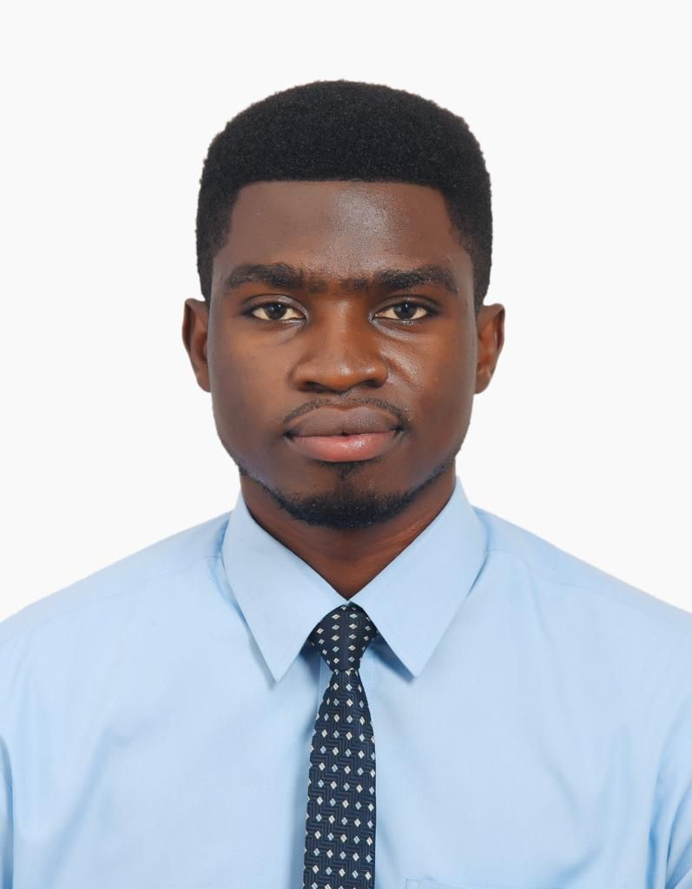

Philip Ackon | WDD 130
Hi, My name is Philip Ackon, I am 28 years of age in a family of five, being the second child of my parent with one elder brother and a younger sister is what makes me unique. I live in Tema a city in Ghana west Africa which lies in the centre of the world.I belong to the church of Jesus Christ of Latter-day Saint. I know of the saviour and the restored gospel of Jesus Christ. These truth makes me feel unique and blessed. Currently i work with Fidelity bank Ghana limited as a customer service officer. I pursed my undergraduate degree in Statistics at the Kwame Nkrumah University of Science and Technology,Kumasi. I am pursing a second degree in computer programming at BYU Idaho online. I enjoy watching football and my favourite club team is Manchester United. I love to read on my free time. Thank you for looking at my web page.